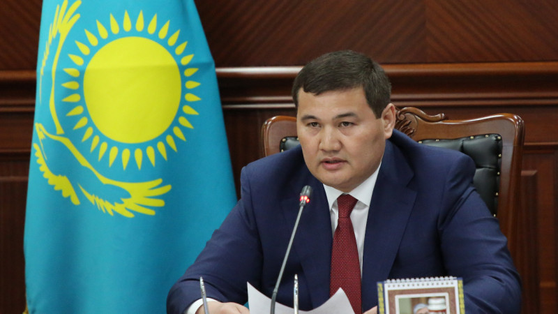

Ежелгі Қазақстан
Ежелгі Қазақстан — қазіргі Қазақстан жерін ежелгі адамзат баласы бұдан 1 миллиондай жыл бұрын мекен еткен.
Қола дәуірінде Сібірдің, Жайық өңірінің, Қазақстан мен Орта Азияның ұлан-ғайыр далаларын тегі және тарихи тағдырларының ортақтығы жағынан туыс тайпалар мекендеді. Бұл тайпалар өзінше бір үлгідегі жарқын мәдениет қалдырды. Мұны ғылымда Андрон мәдениеті деп атайды. Ерте темір ғасыры дәуірінде (біздің заманымыздан бұрынғы I мыңжылдық ортасы) Қазақстанда тайпалық одақтар қалыптасты. Қазақстанның оңтүстік, шығыс және орталық аудандарын мекендеген тайпалар сақ тайпалар одағына, ал батыс, солтүстік аудандарындағы тайпалар савроматтар тайпалық бірлестігіне бірікті. Біздің заманымыздан бұрынғы 3-ғасырда Қазақстан жерінде кейбір тайпалар өз мемлекетін құрып, алыс-жақын елдермен саяси қарым-қатынастарға түсті. Олардың алғашқылары сюнну (ғұндар) болатын. Зерттеушілер ғұндарды түріктердің арғы ата-бабалары деп есептейді. Бұл бірлестікті Мөде басқарған кезде ғұндар бүкіл әлемге танылды. Ғұндардың батысқа жорығы “Халықтардың ұлы қоныс аударуына” түрткі болды. Жетісуда ежелгі тиграхауда сақтарының жерін мұра етіп алған усундер (үйсіндер) біздің заманымыздан бұрынғы 160 ж. шамасында Іле алқабында өз мемлекетін құрды. Олар Қаңлы мемлекетімен шектесті. Бұл тайпалар құрған мемлекеттер Қытай, Парфия, Рим және Кушан империясы сияқты елдермен саяси, экономикалық және мәдени байланыс орнатқан.
Ерте орта ғасырлардағы Қазақстан
Қазақстан аумағындағы ерте орта ғасырдағы мемлекеттер (VI-IX ғғ)VI ғасырдың басында бүгінгі қазақ жерінде аса күрделі бетбұрыстар болған. Алтай-Сібір, Моңғолия жерінде түрік тайпаларының үстем тап өкілдері бірігіп, әскер күшіне сүйенген Түрік қағанаты атты ерте феодалдық мемлекет құрды. Олардың жері шығыс Кореядан бастап, Орта Азияның жерінде қамтылған. Қазақстанда бұл қағандықтың құрамына кірген.Бұл мемлекет туралы жазба деректер түрік тайпаларының өз тілінде жазылған «Үлкен күлтегін», «Таныкөк» құлпытастарындағы жазуларынан белгілі. Махмұд Қашқари, Рашид-ад-диннің тарихи жазбаларынан көптеген құнды деректер алуға болады. Византия, Қытай тарихшылары да мол мәлімет береді. Қазақстанның тарихында бұл мерзім «Түрік дәуірі» (VI-XIII ғ.ғ.) деген атпен белгілі. Қазақ жерінде көрсетілген мерзімде бірнеше феодалдық мемлекеттер өздерінің саяси-әкімшілік биліктерін жүргізді. Қазақстанда алғашқы қауымдық құрылыстан кейін V ғасырдан феодалдық қатынастар орнай бастады (немісше феод- «жер», аль- «иесі», яғни жердің иесі деген ұғымды береді.). Ортағасырлық тайпалардың арасында негізгі екі тап: феодалдық табы мен шаруалар табы қалыптасады. Феодалдар мал мен жердің негізгі иесі болады. Феодалдық қатынастардың орнауы Қазақстанның оңтүстігінде басқа өңірлерге қарағанда жедел жүрді. Орта ғасырлардағы Қазақстан тарихының басты ерекшеліктерінің бірі осы феодалдық-патриархаттық қатынастардың орнауы болды.
Ресей империясының құрамындағы Қазақстан
Қазақстанды Ресейдің отарлауы 1731 жылы Кіші Жүз ханы Әбілқайырдың Ресейге қосылуынан басталды. Бұл процесс 130 жылдан аса уақытқа созылып, 19 ғасырдың 60 жылдарының ортасына қарай толық жүзеге асырылды. 1731 – 1860 жылдары Қазақстан Ресейге, көбіне сөз жүзінде ғана бағынып, іс жүзінде ру, тайпа билеушілері дербес саясат жүргізді. Патша өкіметі халық көтерілістерін аяусыз басып отырғанымен, елдің ішкі істеріне (сот жүйесіне, ру аралық мәселелерге) араласпады. Ел ішіндегі беделді адамдарға, ру басыларына жалақы тағайындап, әр түрлі атақтар беріп, екінші жағынан әкімшілік реформалар жасап, көнбегендерін жазалау арқылы өз билігін күшейтті.1822 ж. “Сібір қазақтары туралы жарғы”, 1824 ж. “Орынбор қазақтары жөніндегі жарғы” деген құжаттармен қазақ жерін басқару тәртібі белгіленді. Осы заңдар бойынша Орта жүз бен Кіші жүз хандықтары жойылды. Кіші жүзде хандық биліктің орнына Ресейдегі сияқты әкімшілік басқару жүйесі қалыптасты. Ал Орта жүзде “аға сұлтан” деген басқарушы қызмет енгізілді. Ішкі округтер құрылды. Округтер болыстарға, болыстар ауылдарға бөлінді.19-ғасырдың басында Хиуа мен Қоқан хандары Оңтүстік Қазақстанға өз бақылауларын орнатты. Қазақтар Қоқан мен Хиуа билеушілеріне қарсы жиі-жиі бас көтеріп отырды. Отарлық езгінің күшеюі, шұрайлы жерлерді тартып алып, бекіністер салу Кенесары Қасымұлы бастаған қазақ халқының ұлт-азаттық қозғалысын (1837 – 47) тудырды.19-ғасырдың 60-жылдарында Қазақстанның Ресейге қосылу үрдісі аяқталды.1914 ж. 1-тамызда Ресейдің 1-дүниежүзілік соғысқа тартылуы Қазақстан халқына ауыр соққы болып тиді.Жаппай наразылықтар нәтижесінде 1916 жылғы көтеріліс шықты. Көтерілістің басталуына патшаның 1916 жылғы 25-маусымдағы майдандағы қара жұмысқа Қазақ пен Түркістан өлкелерінің және ішінара Сібірдің 19-дан 43 жас аралығындағы ер-азаматтарын шақыру жөніндегі жарлығы түрткі болды. Көтерілістің аса ірі ошақтары Жетісу мен Торғайда болды.1917 ж. патшаны тақтан құлатқан Ақпан революциясының оқиғалары көп ұзамай Қазақстанға да жетті.1917 ж. 21 – 28 шілдеде Орынборда 1-Бүкілқазақ съезі өтті. Делегаттар ұлттық автономия, жер-су, т.б. мәселелердің шешілуіне, Құрылтай жиналысына әзірлік және қазақ саяси партиясын құру мәселелеріне баса назар аударды. Әлихан Бөкейханов, Мұхамеджан Тынышбаев, Міржақып Дулатов, Ахмет Байтұрсынұлы, Жанша Досмұхамедұлы, Халел Досмұхамедұлы, Мағжан Жұмабаев, т.б. қайраткерлер отаршылдыққа қарсы Алаш партиясын құрды. Олар қазақ халқын отарлық езгіден азат ету ұраны төңірегіне топтасып, қазақтың дербес, тәуелсіз Алашорда демократиялық мемлекетін құруға кірісті. Бірақ көп ұзамай бүкіл Ресейдегі сияқты қазақ жерінде де кеңес билігі орнады.
Кеңестік Социалистік Республикалар Одағы
Кеңестік Социалистік Республикалар Одағы (Кеңес Одағы, КСРО; Орыс: Союз Советских Социалистических республик, СССР, Советский Союз) — Еуропада және Азияда 1922 жылдан 1991 жылға дейiн өмір сүрген мемлекет. КСРО Еуразияның 41% бөлiгiнде орналасты және 1917 жылдан дейін Ресейлiк империя Финляндия, Поляк патшалығының бөлiгiнсiз орналасатын және (Карстың жерi, қазіргі Түркия) кейбiр басқа аумақтағы әлемiнiң елдері арасында орналасқан ауданы бойынша өте iрi болды.
1917 жылғы Конституцияға сәйкес, КСРО бiртұтас одақ, көп ұлтты және социалистiк мемлекет болып жарияланды.
Ауғанстанмен, Мажарстанмен, Иранмен, Қытаймен, (1948 жылдың 9 қыркүйегiнен) Солтүстік Кореямен, Моңғол елменНорвегиямен, Польшамен, Румыниямен, Түркиямен, Финляндиямен, Чехословакиямен және тек қана теңiздегi АҚШ-тан, Швециямен және Жапониямен КСРО-ның Екiншi дүниежүзілік соғысынан кейiн жаяу шекарасы болды.
КСРО Ресей КФСР, Украин КСР, Беларусь КСР және Закавказ СФСР бiрiгуі жолымен 1922 жылдың 30 желтоқсанында құрылды.
Конституциясы бойынша егемендi мемлекет болып табылған (әртүрлi жылдарда 4-пен 16-мен аралығындағы) одақтас республикалардан тұрды; әрбiр одақтас республиканың одақтан еркiн бөлiнiп шығу мүмкіндігі сақталынды.
Одақтас республика шет мемлекеттермен қатынасқа шығып, келiсiм-шарттарымен тұжырымдап , дипломаттық және консулдық өкiлдермен ауысып, халықаралық ұйымдардың қызметiне қатысуға құқығы болды. КСРО-мен қатар Біріккен Ұлттар Ұйымының 50 ел-негiздеушiлерiнiң арасында Беларусь КСР және Украина КСР-лері қатар дауыс құқығына ие болды.
Тәуелсіз Қазақстан Республикасының даму тарихы
1991 жылғы 16—желтоқсанда «Қазақстан Республикасының Мемлекеттік тәуелсіздігі туралы» Конституциялық заңы қабылданды.
Қазақстанның Тәуелсіздігін ресми түрде ең алғаш болып мұхиттың арғы жағында жатқан Америка Құрама Штаттары мойындады, екінші болып айдаһардай айбарлы Қытай, сонан соң Ұлыбритания мойындады. Оның артынан Моңғолия, Франция, Жапония, Оңтүстік Корея және Иран Ислам мемлекеті мойындады. Иран — Қазақстанның тәуелсіздігін мойындаған алғашқы мұсылман мемлекеті. Ал «Тәуелсіздігімізді ең алғаш болып бауырлас Түркия мемлекеті мойындады» деген сөздің ақиқат еместігін білгеніміз жөн. Түркия алғаш болып Қазақстанда өз елшілін ашты, бірақ тәуелсіздігімізді мойындауда он жетінші болды. Бұл деректі еліміз Тәуелсіздік алғаннан кейін Сыртқы істер министрінің орынбасары қызметін атқарған, елдің сыртқы саясат тұжырымдамасы авторларының бірі болған Вячеслав Ғиззатов келтірген. Алғашықы күндері әлемнің салмақты елдері мойындап, кейіннен басқа да елдер мойындап жатты. Осылайша әлемдік саясат аренасында ҚАЗАҚСТАН деген мемлекет тәй—тәй басты. Небары бірнеше аптаның ішінде әлемнің көптеген беделді елдері Қазақ елінің тәуелсіздігін мойындап, дипломатиялық қатынастар басталды

Көру
Өшіру
Қызылорда облысының жаңа әкімі кеңесшілерден бас тартты